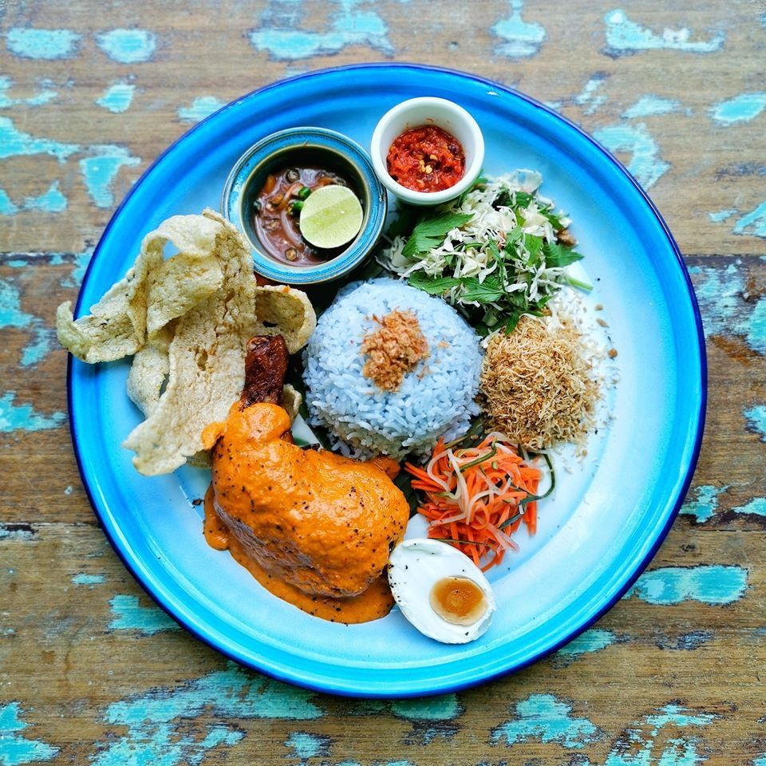
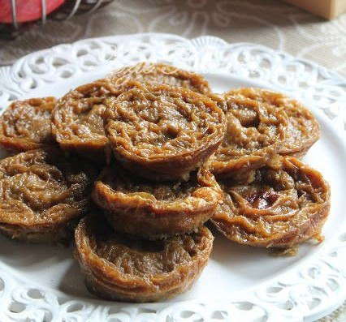
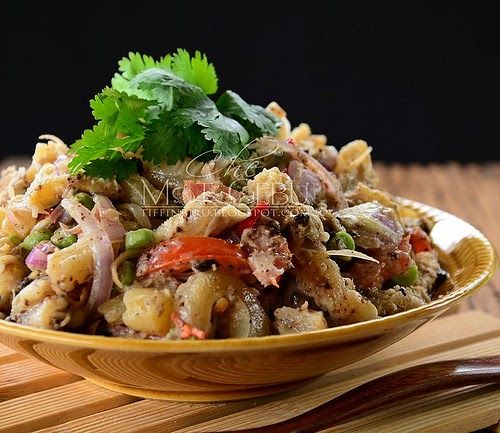
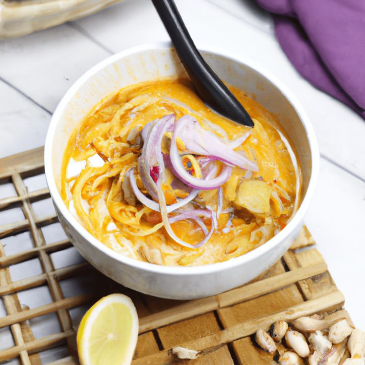
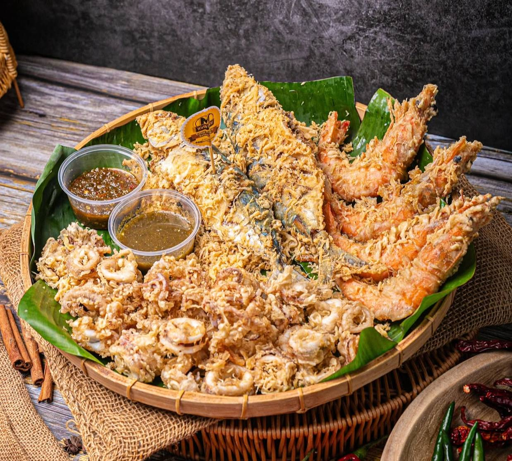
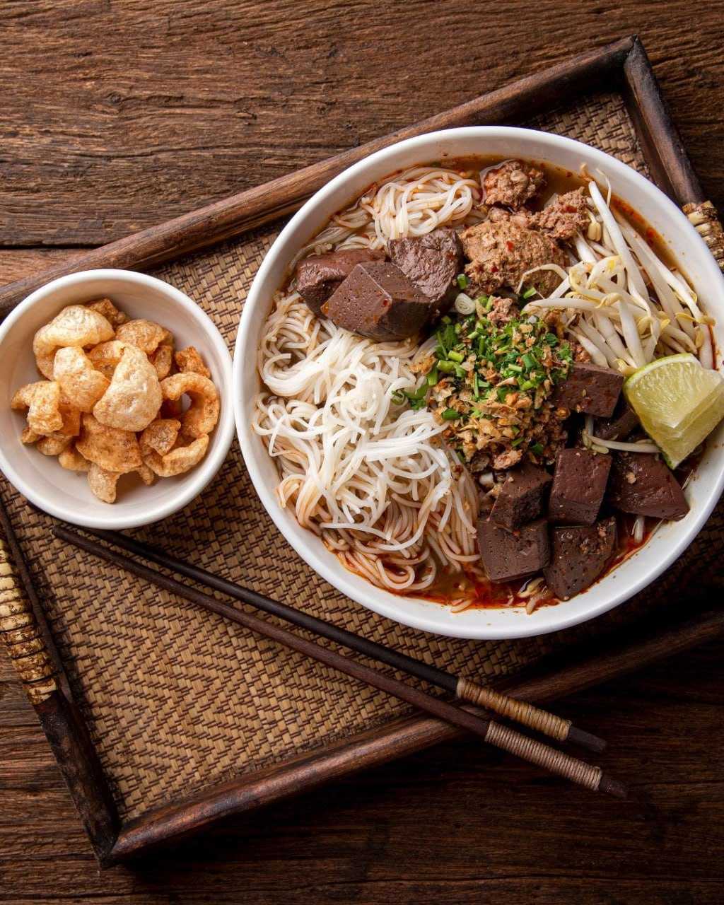

Back

Traditional Food

Nasi Kerabu
★★★★★

Akok
★★★★☆
Lompat Tikam
★★★★☆

Kerabu Perut
★★★★☆

Laksa Kelantan
★★★★★

Celup Tepung
★★★★☆

Mee Celup
★★★★☆
★★★★★
★★★★☆
★★★★☆
★★★★☆
★★★★★
★★★★☆
★★★★☆
Nasi Kerabu is a traditional Kelantanese dish featuring blue-tinted rice colored naturally with butterfly pea flowers. It is served with fresh herbs, fish or chicken, salted egg, and budu, a fermented fish sauce that adds a bold and distinctive flavour. This dish is commonly enjoyed both as a daily meal and during special occasions.
Recommended place: Lieniey Nasi Kerabu Tumis, Kota Bharu
Review: Well-known for its fragrant blue rice, generous herbs, and rich budu flavour. Highly rated by locals and visitors.
📍 View on Google MapsAkok is a traditional Kelantanese dessert made from eggs, coconut milk, and palm sugar. It has a soft, custard-like texture with a lightly caramelised surface, offering a rich and comforting taste. Akok is commonly enjoyed during afternoon tea and festive gatherings.
Recommended place: Akok Kedut Debok, Kota Bharu
Review: Famous for its soft texture and balanced sweetness, making it one of the most popular traditional desserts in Kelantan.
📍 View on Google MapsLompat Tikam is a traditional layered dessert made from coconut milk and flour, served with palm sugar syrup. Its soft texture and mildly sweet flavour make it a popular choice during festive occasions and family gatherings.
Recommended place: Pasar Siti Khadijah, Kota Bharu
Review: Freshly prepared by local vendors and well-loved for its authentic taste.
📍 View on Google MapsKerabu Perut is a traditional salad made from sliced beef tripe mixed with herbs, grated coconut, and spices. It is known for its bold flavour and unique texture, reflecting the richness of Kelantanese cuisine.
Recommended place: Local eateries around Kota Bharu
Review: A favourite among locals who enjoy strong and spicy traditional flavours.
📍 View on Google MapsLaksa Kelantan is known for its thick and creamy gravy made from blended fish and coconut milk. Served with soft rice noodles, the dish has a mild yet savoury taste that differentiates it from other laksa varieties in Malaysia.
Recommended place: Kopitiam Kita, Kota Bharu
Review: Popular for its smooth gravy and comforting flavour, suitable for all ages.
📍 View on Google MapsSeafood Celup Tepung is a popular dish where fresh seafood is coated in a light batter and deep-fried until crispy. The dish offers a crunchy texture on the outside while maintaining juicy seafood inside.
Recommended place: Pantai Sabak food stalls
Review: Best enjoyed fresh by the beach, crispy and flavourful.
📍 View on Google MapsMee Celup is a traditional Kelantanese noodle dish where yellow egg noodles are boiled and then immersed in a rich, spicy, and flavorful gravy made from a mix of fish or chicken stock, herbs, and spices. It is often garnished with sliced vegetables, eggs, and sometimes seafood.
Recommended place: Kedai Mee Celup Tok Sabak, Kota Bharu
Review: Loved by locals for its thick flavorful gravy and perfectly cooked noodles, making it a comforting and hearty meal.
📍 View on Google Maps